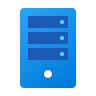
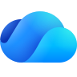
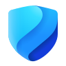
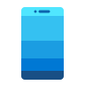

Internet
La red mundial que permite visitar sitios web y usar servicios en línea.
Red públicaRedes e InternetUna red conecta dispositivos para que puedan comunicarse y compartir información.
Algunos ejemplos habituales y unas recomendaciones básicas de seguridad.
La red mundial que permite visitar sitios web y usar servicios en línea.
Red pública
Conecta los dispositivos de una casa, un aula o una oficina.
LAN
Guarda archivos en servidores de Internet y accede a ellos desde otros equipos.
Archivos en líneaDirige el tráfico entre los dispositivos de la red local e Internet.
Equipo de red
Una contraseña propia y las actualizaciones ayudan a proteger la red Wi-Fi.
Wi-Fi
Ordenadores y móviles se conectan por Wi-Fi o mediante un cable de red.
Conexiones